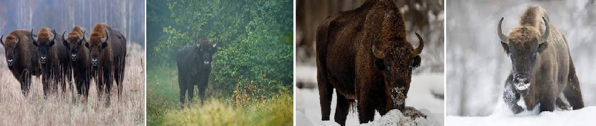

Acasa
Articole
Stiai ca...?
Quiz
Info
Descoperă frumusețea și măreția zimbrilor!
Bun venit pe site-ul nostru dedicat zimbrilor! Aici veți găsi o mulțime de informații interesante și utile despre aceste animale fascinante și despre eforturile de conservare și protejare a speciei. Indiferent dacă sunteți un pasionat de animale sălbatice, un cercetător sau un simplu curios, suntem siguri că veți găsi aici informațiile de care aveți nevoie pentru a vă satisface curiozitatea. De la istoria și evoluția speciei, la habitatul și distribuția lor în întreaga lume, la programele de conservare și protejare a speciei, suntem aici pentru a vă ajuta să înțelegeți mai bine aceste animale fascinante și să contribuiți la eforturile de protejare a lor. Vă invităm să explorați site-ul nostru și să descoperiți tot ce trebuie să știți despre zimbri.
